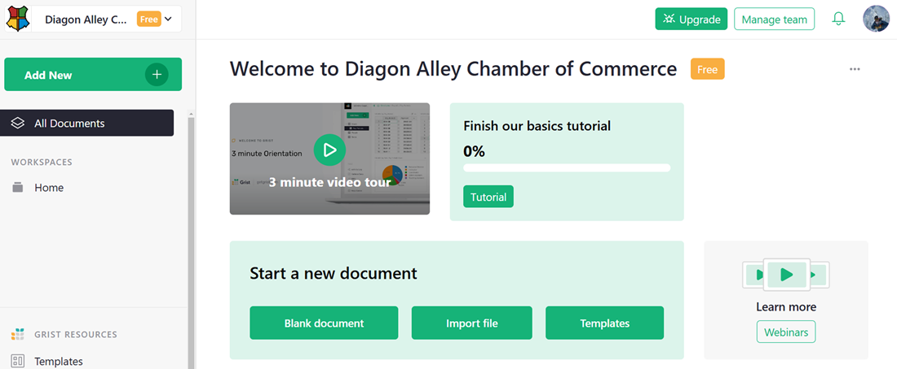
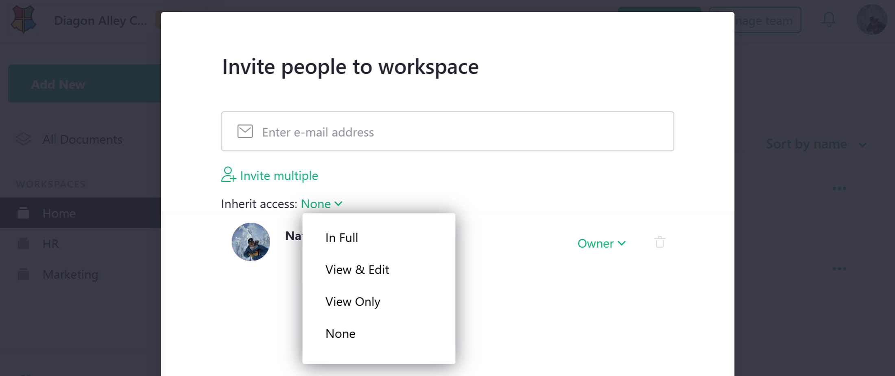
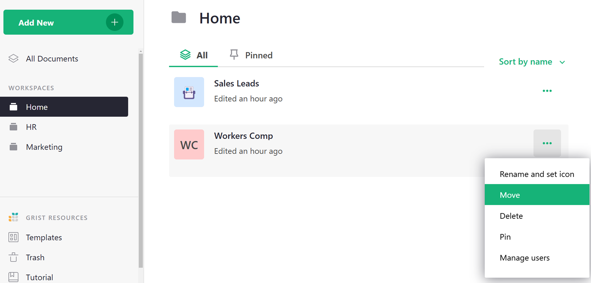
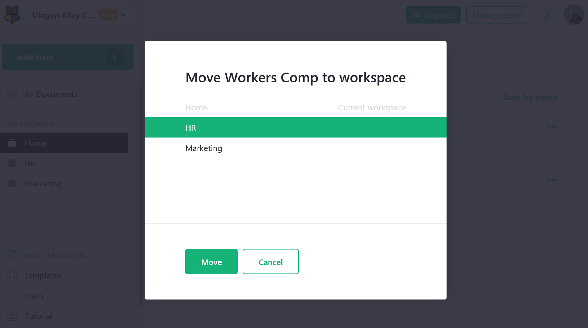

Workspaces#
A team site can be divided into collections of documents called “workspaces” which can be shared as a single unit with other users. This is convenient, for example, for documents related to a single project. You can only create workspaces on team sites, not personal sites. To check what kind of site you have, or to find a team site you have purchased, follow the steps at Team sharing.
A team site, when first created, has a single workspace called “Home.”

You can rename that workspace if you like, by hovering over the workspace name on the left bar, clicking on the three-dots icon, and selecting “Rename”.
Even better, you can create new workspaces, so you can group your documents and share them as a unit.
To add a document to a specific workspace, click on that workspace in the left bar, then select “Add New”, then “Create empty document” (or “Import document”).
You can control who has access to a workspace using “Manage Users.” The controls are just like for sharing documents.
Viewers of a team site will also be viewers of all its workspaces. Likewise for editors and owners. To exclude a workspace from inheriting team site viewers, editors, and owners, set “Inherit Access” to “None”. You can also set it to “View Only” to limit inheritance to view rights, or “View & Edit” to limit inheritance to view and edit rights (excluding the right to control sharing options).

To move a document from one workspace to another, hover over the document, click on the three-dots icon to the right of the document’s name, and select “Move”.

You’ll then have the option to pick the workspace you want.
